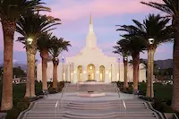

Gallery of Temples of The Church of Jesus Christ of Latter-day Saints
Buenos Aires Argentina TempleCórdoba Argentina Temple

Mendoza Argentina TempleProvo City Center TempleSalt Lake TempleSalta Argentina TempleSan Diego California TempleLima Peru Los Olivos TempleLima Peru Temple